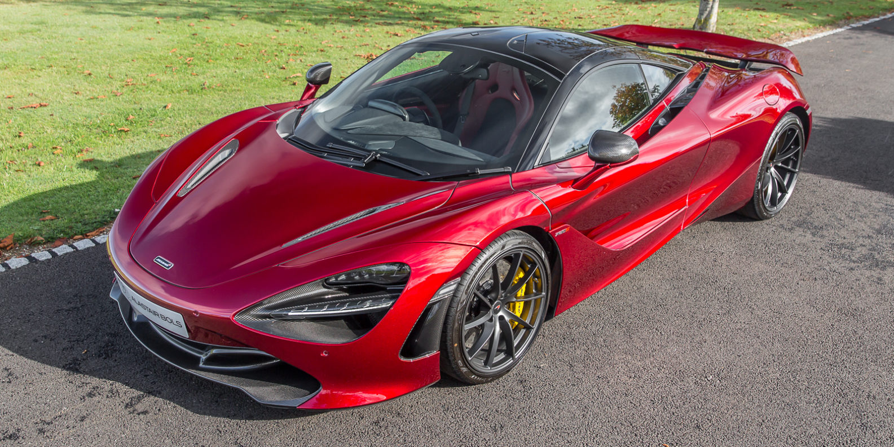

MCLAREN 720S

El 'McLaren 720S' es un automóvil deportivo británico diseñado y fabricado por McLaren Automotive. Es el segundo automóvil completamente nuevo en McLaren Super Series , reemplazando el McLaren 650S a partir de mayo de 2017.
El 720S fue lanzado en el Salón del Automóvil de Ginebra el 7 de marzo de 2017 y está construido sobre un chasis de carbono modificado, que es más ligero y más rígido en contraste con el 650S. El McLaren 720S tiene un precio de £ 208.600 (~ $ 254.000).